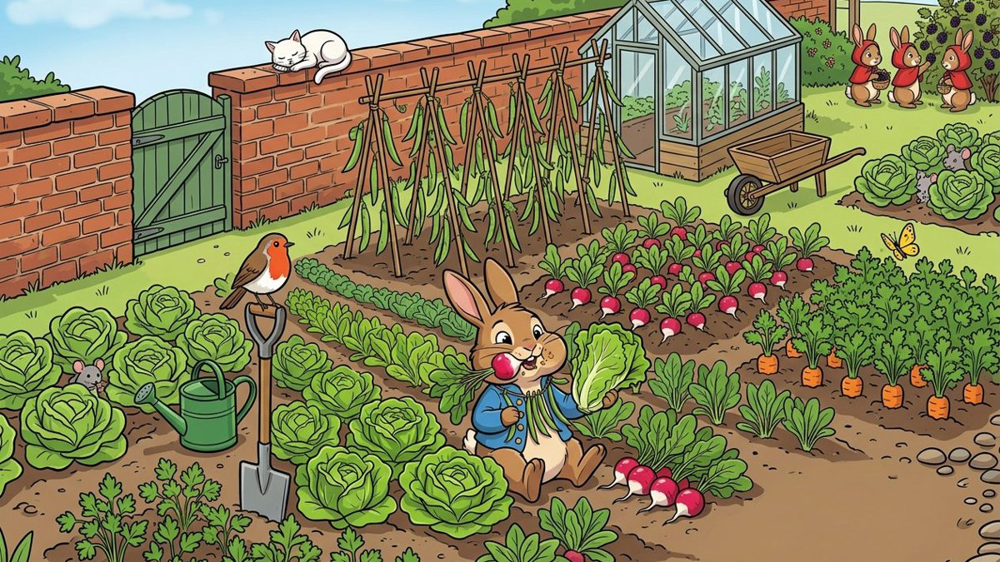

01 / PLAYBOOK
AI 使用策略 · 五档战术路线
像橄榄球推进码数一样，一档一档往前推。点击任一档，作品馆只显示这一档的示范作品。
02 / GLOSSARY
战术词典 · 23 个必懂 AI 概念
每个概念一句话讲清楚，再配一个橄榄球比喻。按 L0–L4 排列，跟着档位学；点“深入学”跳到好友的完整课件。
03 / GEAR
装备库 · 常用 AI 工具怎么选
不求全，只列课上真正会用到的。每件装备写清楚：擅长什么、医生怎么用、要小心什么。
04 / GALLERY
作品馆
全部来自我的 GitHub 公开项目。在线演示可以课上直接打开；其余是源码和文档。
05 / LESSONS
课件馆 · 示范课路线
线上线下课都按同一条主线讲，面向医生、护士、科研人员、年轻父母和社会工作者。先看一个完整实战案例，再按路线学。

实战案例 01从一本书到会说话的绘本
一个急诊外科爸爸 + AI，10 天把孩子爱看的书做成漫画伴读、有声书和互动小游戏。完整展示需求怎么提、版本怎么迭代、人和 AI 怎么分工、哪些坑能直接避开。
- 年轻父母照着 30 分钟练习做出第一页
- 医生 / 护士看“谁提需求、谁拍板”的分工
- 科研人员看版本迭代、测试与真机验证
- 社会工作者看版权、隐私与防沉迷红线
06 / FILM ROOM
延伸学习 · 录像室
07 / SAFETY
AI 可以跑路线，判断留给人。
患者隐私停在门外
任何真实病历、影像、身份信息都不进入公共 AI。公开仓库只放代码与模拟数据。
证据分三层
每个论断标明：事实、关联还是推测。没有来源的结论不进课件。
人类复核在环
AI 产出的诊疗、统计、专利、投稿内容，都要由专业人员最终确认。
失败即停
证据不足时，宁可让 AI 说“查不到”，也不要让它编一个看似合理的答案。
08 / TOOLBOX
开源工具箱
我收藏并在用的他人开源项目（fork），课上作为“装备库”介绍，和我自己的作品分开。
09 / COACH
丁海祥 · Haixiang Ding, MD
急诊创伤外科主治医师，苏州大学临床医学博士在读。研究方向：放射性骨骼肌损伤、骨质疏松。把临床问题、教学经验和开源实践放在同一张战术板上，帮助医护人员从“想学 AI”走到“能用、用对”。